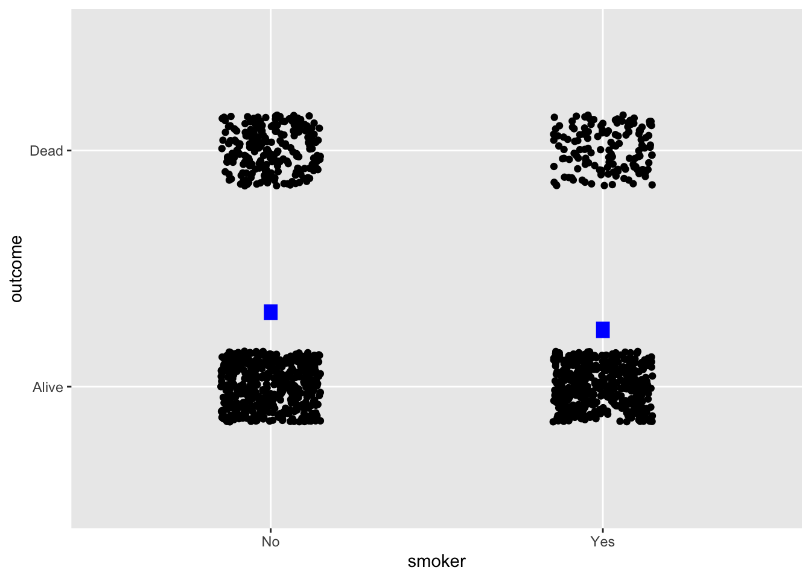
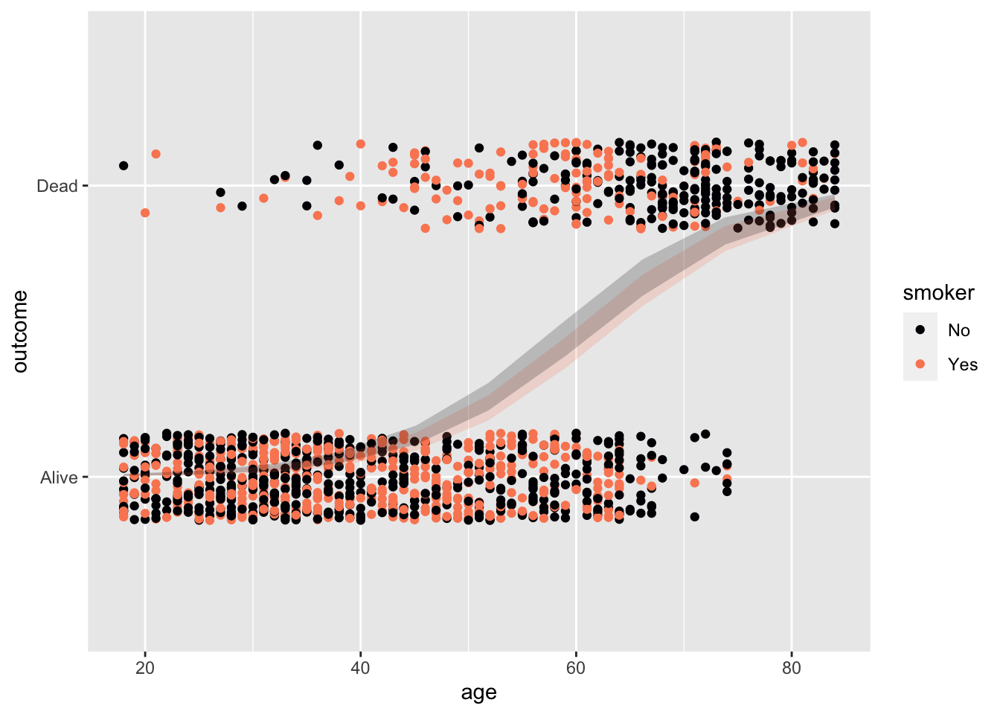

Nats |> names()[1] "country" "year" "GDP" "pop" These are presentation notes for the October 2023 StatChat meeting. For more than 15 years, statistical educators in the Twin Cities region of Minnesota have been gathering a half-dozen times a year at StatChat to share comradeship and teaching insights. Among the schools regularly represented are the University of Minnesota, Macalester College, St. Olaf College, Hamline University, Augsburg University, Carleton College, St. Cloud State University, and Minnesota State University Mankato.
Abstract: “Mere Renovation is Too Little Too Late: We Need to Rethink Our Undergraduate Curriculum from the Ground Up” is the title 2015 paper by George Cobb. Honoring George’s challenge, I have been rethinking and re-designing the introductory statistics course, replacing traditional foundations using modern materials and reconfiguring the living and working spaces to suit today’s applied statistical needs and projects. In the spirit of a “model house” used to demonstrate housing innovations, I’ll take you on a tour of my “model course,” whose materials are available free, open, and online. Among the features you’ll see: an accessible handling of causal reasoning, a unification of the course structure around modeling, a streamlined yet professional-quality computational platform, and an honest presentation of Null Hypothesis Testing that connects it to more current forms of statistical inference.
The “consensus” Stat 101 is 50 years out of date:
My objective: Demonstrate the extent to which it’s possible to overcome these deficiencies with a complete, practicable, no-prerequisite course.
I’m happy to discuss the above points anytime, but that’s not the point of this talk.
Jeff proposes 15 changes*, dividing into effort categories:
Jeff Witmer (2023) “What Should We Do Differently in STAT 101?” Journal of Statistics and Data Science Education link
Almost all of which are engaged in Lessons in Statistical Thinking*
Streamline!
|> verb |> …Data is always in data frames.
Columns: Variables
Rows: “Specimens” / Unit of observation
Computing concepts:
Usually start with a named data frame, piping it to a function.
Nats |> names()[1] "country" "year" "GDP" "pop" Both the horizontal and vertical axes are mapped to variables.
Just one command: pointplot() produces point plot with automatic jittering as needed.
Tilde expression specifies which variable is mapped to y and x (and, optionally, color and faceting).
Galton |> pointplot(height ~ sex)
Galton |> pointplot(height ~ mother + sex + sex)

Galton |> pointplot(height ~ sex, annot = "violin")
Galton |> sample_n(size=100) |>
pointplot(height ~ sex, annot = "model", alpha = 0.1, model_alpha=0.75)
Galton |> pointplot(height ~ mother + sex + father, annot = "model", alpha = 0.1, model_alpha=0.75)
[Perhaps use two class days]
Five basic operations: mutate(), filter(), summarize(), select(), arrange()
Nats# A tibble: 8 × 4
country year GDP pop
<chr> <dbl> <dbl> <dbl>
1 Korea 2020 874 32
2 Cuba 2020 80 7
3 France 2020 1203 55
4 India 2020 1100 1300
5 Korea 1950 100 32
6 Cuba 1950 60 8
7 France 1950 250 40
8 India 1950 300 700Nats |> filter(year == 2020)# A tibble: 4 × 4
country year GDP pop
<chr> <dbl> <dbl> <dbl>
1 Korea 2020 874 32
2 Cuba 2020 80 7
3 France 2020 1203 55
4 India 2020 1100 1300Nats |> summarize(totalpop = sum(pop), .by=year)# A tibble: 2 × 2
year totalpop
<dbl> <dbl>
1 2020 1394
2 1950 780[Perhaps merged into a two-day wrangling unit with Lesson 5]
Pipes, functions, parentheses, arguments, …
[Entirely optional]
Consistently use explanatory/response modeling paradigm. Introduce models with two or three explanatory variables early in the course.
Use variance as measure of variation of a variable. (Ask me about the simple explanation of variance that doesn’t involve calculating a mean.)
Use data wrangling to introduce model values, residuals, …
mtcars |>
mutate(mpg_mod = model_values(mpg ~ hp + wt)) |>
select(hp, wt, mpg_mod) |>
head() hp wt mpg_mod
Mazda RX4 110 2.620 23.57233
Mazda RX4 Wag 110 2.875 22.58348
Datsun 710 93 2.320 25.27582
Hornet 4 Drive 110 3.215 21.26502
Hornet Sportabout 175 3.440 18.32727
Valiant 105 3.460 20.47382Then transition to model coefficients.
mtcars |>
model_train(mpg ~ hp + wt) |>
conf_interval()# A tibble: 3 × 4
term .lwr .coef .upr
<chr> <dbl> <dbl> <dbl>
1 (Intercept) 34.0 37.2 40.5
2 hp -0.0502 -0.0318 -0.0133
3 wt -5.17 -3.88 -2.58 Coefficients are always shown in the context of a confidence interval, even if they don’t yet know the mechanism for generating such intervals.
Demonstrate mechanism of “adjustment”: Evaluate model holding covariates constant.
6-11 class hours, depending on how much spent with named probability distributions. (USAFA engineers want some practice with named distributions: normal, exponential, poisson, …)
Students construct simple simulations, using them to generate data.
mysim <- datasim_make(
x <- rnorm(n),
y <- 2 + 3*x + rnorm(n, sd=0.5)
)
mysim |> sample(size=4)# A tibble: 4 × 2
x y
<dbl> <dbl>
1 0.552 4.24
2 -0.675 0.285
3 0.214 2.59
4 0.311 3.39 Mostly using simulations.
Early introduction of the concept of likelihood: probability of data given hypothesis/model.
Presentation of simulations as flow on a graph. Used to express a hypothesis.
(2 or 3 day unit)
Definition of risk, risk factors, baseline risk, risk ratios, absolute change in risk.
Use absolute change for decision making, but use risk ratios and odds ratios for calculations.
Regression when response is a zero-one variable.
Whickham |> pointplot(outcome ~ smoker, annot="model", model_alpha = 1)
Whickham |> pointplot(outcome ~ age + smoker, annot="model")
Runs <- mysim |>
sample(size = 5) |>
model_train(y ~ x) |>
trials(10)
Runs |> select(.trial, Intercept, x) .trial Intercept x
1 1 2.118 3.173
2 2 1.659 3.164
3 3 2.204 2.950
4 4 2.055 3.318
5 5 1.771 3.141
6 6 2.156 2.920
7 7 2.157 3.324
8 8 2.091 2.833
9 9 2.446 2.794
10 10 1.892 2.399Runs |> summarize(var(Intercept), var(x)) var(Intercept) var(x)
1 0.05166 0.08038Demonstrate that variance scales as 1/n.
Ratio of (change in output) to (change in input).
Physical units important.
Always as a probability distribution
covariates, DAGs, confounding, adjustment
experiment interpreted as re-wiring of DAGs: requires intervention
What we want: p(hypothesis | data)
What we have: hypothesis |> simulation |> data summarized as a Likelihood.
Question: How do we calculate what we want.
Setting: medical screening. Test result + or -.
We put two hypotheses into competition based on the test result.
Likelihoods we can measure from data:
Setting: prevalence(Sick)
Calculation
\[odds(Sick|+) = \frac{p(+ | Sick)}{p(+ | Healthy)} \ odds(prevalence)\]
Null is “Healthy.”
We have no claim about \(prevalence\).
If we have no claim about \(p(+ | Sick)\), we are more inclined to conclude \(Sick\) if \(p(+ | Healthy)\) is small.
Null is “Healthy.” Alternative is “Sick”.
We have no claim about \(prevalence\), but we have the ability to estimate \(p(+ | Sick)\).
Inclined to conclude \(Sick\) if \(p(+ | Healthy)\) is small (like HNT) and \(p(+ | Sick)\) is small. \(p(+ | Sick)\) is the power of the test.
Operations for all students
Operations used in demonstrations (and suited to some students)
Computations on variables are always inside the arguments of a function taking a data frame as an input.
Tilde expressions for models and graphics.